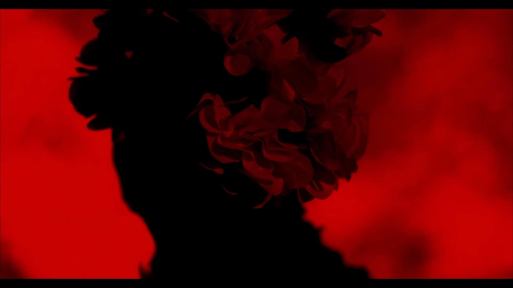

Images.
Rhythm.
Connection.

I’m Nikolas Roumeliotis, a filmmaker, editor and digital artist based in Athens.
Editing is the core of my work. I’m interested in how a pause or a change in sequence can shift the way a scene feels. I work closely with filmmakers and artists to find the right form for each story.
My credits span short films, music videos, theatre and live performance. My work as an editor and director has been recognised at the Athens and Drama International Film Festivals.
Alongside my screen work, I explore stop-motion and build interactive and generative experiences. My current focus is immersive installations and live performance visuals that invite audiences to take part.
My background combines computer engineering with film training at Stavrakos Film School and Prague Film School. I’m currently completing a Master’s in Multimedia & Digital Arts at Ionian University.
If you’re developing a film, a music video or an experimental project, I’d like to hear about it.